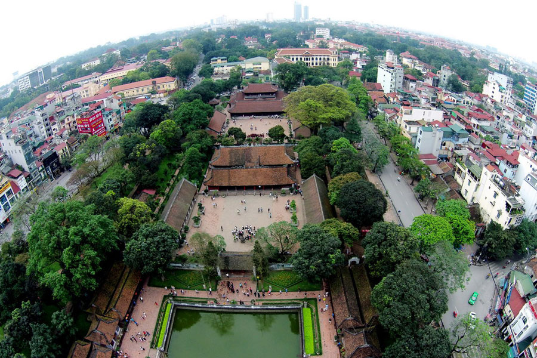
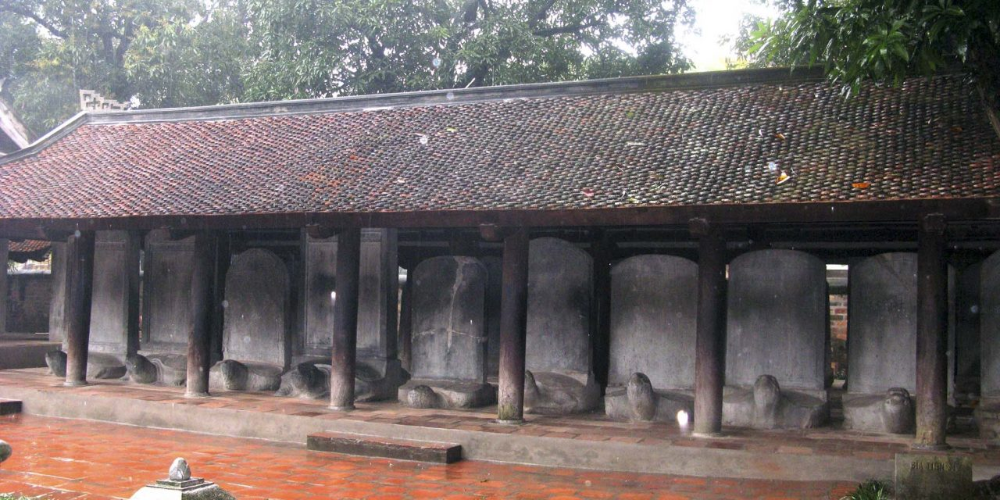
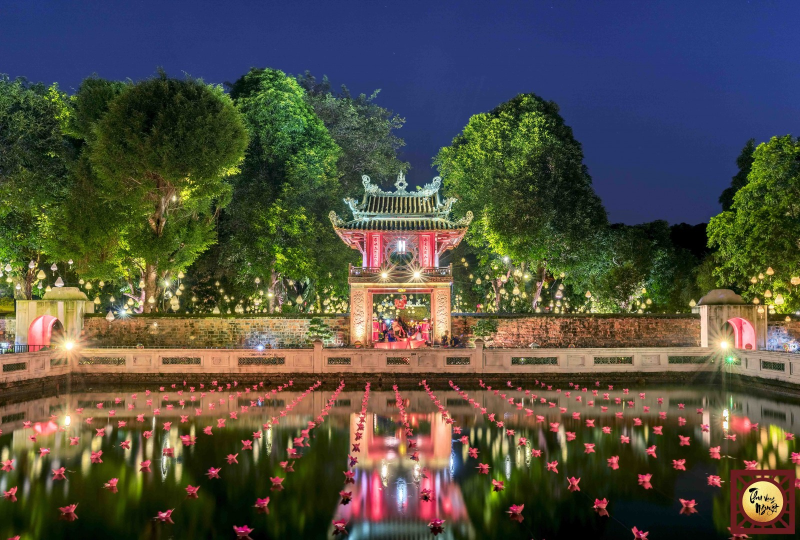

Văn Miếu – Quốc Tử Giám là quần thể di tích đa dạng và phong phú hàng đầu của thành phố Hà Nội, nằm ở
phía Nam kinh thành Thăng Long. Quần thể kiến trúc Văn Miếu – Quốc Tử Giám bao gồm: hồ Văn, khu Văn
Miếu – Quốc Tử Giám và vườn Giám, mà kiến trúc chủ thể là Văn Miếu - nơi thờ Khổng Tử và Quốc Tử Giám
- trường đại học đầu tiên của Việt Nam. Khu Văn Miếu – Quốc Tử Giám có tường gạch vồ bao quanh, phía
trong chia thành 5 lớp không gian với các kiến trúc khác nhau. Mỗi lớp không gian đó được giới hạn bởi
các tường gạch có 3 cửa để thông với nhau (gồm cửa chính giữa và hai cửa phụ hai bên). Từ ngoài vào
trong có các cổng lần lượt là: cổng Văn Miếu, Đại Trung, Khuê Văn Các, Đại Thành và cổng Thái Học.
Với hơn 700 năm hoạt động đã đào tạo hàng nghìn nhân tài cho đất nước. Ngày nay, Văn Miếu-Quốc Tử
Giám là nơi tham quan của du khách trong và ngoài nước đồng thời cũng là nơi khen tặng cho học sinh
xuất sắc và còn là nơi tổ chức hội thơ hàng năm vào ngày rằm tháng giêng. Đặc biệt, đây còn là nơi
các sĩ tử ngày nay đến "cầu may" trước mỗi kỳ thi.

Toàn cảnh văn miếu nhìn từ trên cao.
Lăng Bác được xây dựng lên theo bốn phương châm: Dân tộc – hiện đại – trang nghiêm – giản dị. Vật
liệu xây dựng Lăng cũng được mang đến từ nhiều địa phương trên khắp cả nước, đều được đảm bảo về độ
an toàn và chất lượng. Lăng gồm có ba tầng:
Tầng 1 là một dãy khán đài xây theo hình bậc thang để tiện tổ chức các buổi lễ quan trọng tại
Quảng Trường Ba Đình.
Tầng 2 là phần Trung Tâm của lăng gồm phòng thi hài, các hành lang và cầu thang lên xuống. Di
hài của Chủ tịch Hồ Chí Minh được đặt trong lồng kính cùng với nhiệt độ phòng ở mức quy định.
Tầng trên là mái lăng được thiết kế thành hình tam cấp. Trên mặt chính của Lăng có khắc dòng
chữ “Chủ Tịch Hồ Chí Minh” bằng đá hồng ngọc màu mận chín.
Hình ảnh Lăng Bác đã gắn bó sâu sắc trong tâm thức của biết bao người. Mỗi khi tới thăm lăng ai cũng
có cảm giác như được ở gần hơn với Chủ tịch Hồ Chí Minh, tấm lòng kính trọng, biết ơn gửi tới Người
Luôn được đề cao. Chắc hẳn ai tới đây cũng không thể tránh khỏi những giây phút bồi hồi, xúc động
khi được thăm nơi an nghỉ của Người cha già vĩ đại và cùng lắng nghe lại những câu chuyện, những
phóng sự đời thực về Bác Hồ kính yêu.

Tượng rùa đá cõng bia tiến sĩ.
Kiến trúc
Văn Miếu Quốc Tử Giám: nằm ở phía Nam thành Thăng Long, xưa thuộc thôn Minh Giám, tổng Hữu Nghiêm,
huyện Thọ Xương; thời Pháp thuộc làng Thịnh Hào, tổng Yên Hạ, huyện Hoàng Long, tỉnh Hà Đông. Nay
thuộc thành phố Hà Nội. Bốn mặt đều là phố, cổng chính là phố Quốc Tử Giám (phía Nam), phía Bắc
là phố Nguyễn Thái Học, phía Tây là phố Tôn Đức Thắng, phía Đông là phố Văn Miếu. Quần thể kiến
trúc này nằm trên diện tích 54331m2 bao gồm: hồ Văn, khu Văn Miếu Quốc Tử Giám và vườn Giám mà
kiến trúc chủ thể là Văn Miếu nơi thờ Khổng Tử và Quốc Tử Giám, trường học cao cấp đầu tiên của
Việt Nam.
Văn Hồ: nằm ở phía nam, trước mặt Văn Miếu là hồ Minh Đường hay Văn hồ, dân gian
thường gọi là hồ Giám. Giữa hồ có gò Kim Châu, trên gò dựng Phán Thuỷ đường (là nơi diễn ra các buổi
bình văn thơ của nho sĩ kinh thành xưa). Theo ý đồ kiến trúc, đây vốn là cái "tiểu minh đường" của
Văn Miếu, là một bộ phận khăng khít của toàn bộ công trình kiến trúc chung.
Văn Miếu Môn: là cổng dẫn vào khu thứ nhất của văn miếu. Phía trước Văn Miếu môn
là tứ trụ (nghi môn) và hai tấm bia Hạ mã hai bên đó là mốc ranh giới chiều ngang phía trước mặt
cổng. Tứ trụ được xây bằng gạch, hai trụ giữa xây cao hơn trên có hình 2 con nghê chầu vào. Hai trụ
ngoài đắp nổi 4 con chim phượng xoè cánh chắp đuôi vào nhau.

Khuê Văn Các và Văn Hồ lung linh trong đêm hội hoa đăng.
Đại Trung Môn: Từ cổng chính Văn Miếu môn, vào không gian thứ nhất gọi là khu nhập
đạo, theo đường thẳng tới cổng thứ hai là Đại Trung môn. Ngang hàng với Đại Trung môn bên trái có Thành
Đức môn, bên phải có Đạt Tài môn. Hiện nay hai bên là không gian cây xanh và thảm cỏ Bức tường ngang
nối ba cửa vươn dài ra hai bên tới tận tường vây dọc bên ngoài.
Khuê Văn Các: Khuê văn các (nghĩa là "gác vẻ đẹp của sao Khuê") là một lầu vuông
tám mái, bao gồm bốn mái thượng và bốn mái hạ, cao gần chín thước, do Tổng trấn Nguyễn Văn Thành
triều Nguyễn đương thời cho xây dựng vào năm 1805. Gác dựng trên một nền vuông cao cân xứng có lát
gạch Bát Tràng mỗi bề có chiều dài là 6,8 mét. Để bước lên được nền vuông này phài đi qua ba bậc
thang đá. Kiểu dáng kiến trúc Khuê Văn Các rất hài hòa và độc đáo. Tầng dưới là 4 trụ gạch vuông, mỗi
cạnh của trụ có chiều dài một mét và trên các mặt trụ đều có chạm trổ các hoa văn rất tinh vi và sắc
sảo. Tầng trên là kiến trúc gỗ sơn son thếp vàng trừ mái lợp và những phần trang trí góc mái hoặc
trên bờ nóc là bằng chất liệu đất nung hoặc vôi cát có độ bền cao.
Giếng Thiên Quang, bia tiến sĩ: Thiên Quang tỉnh (tức "giếng soi ánh sáng bầu trời")
còn được gọi là Văn Trì (Ao Văn). Giếng hình vuông, quanh bờ đều xây hàng lan can tới độ ngang lưng.Một
con đường nhỏ lát gạch bao quanh giếng cho phép người ta có thể dạo quanh giếng, lên gác Khuê Văn, vào
cửa Đại Thành hoặc rẽ sang 2 vườn bia đá ở 2 bên.Nhưng có lẽ di tích có giá trị bậc nhất ở đây là 82
tấm bia Tiến sĩ dựng ở hai bên phải trái của giếng Thiên Quang, mỗi bên 41 tấm dựng thành 2 hàng ngang,
mặt bia đều quay về phía giếng. Cả hai bên, giữa mỗi vườn bia xây một tòa đình vuông, 4 mặt bỏ trống,
nền cao, giữa nền có bệ, cửa đều trông thẳng xuống giếng.